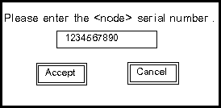
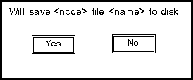

GEMS Proprietary Class: A
Direction 5117807-800, Rev# A
GEMS Proprietary Class: A |
| Last Revised on: | September 20, 2005 |
Application and characterization parameters are stored in the on-board FLASH memory of the TGPU, DCB, CCB, MTCB, JEDI and ORP control boards, and must be the same as the files stored on disk. To ensure that these files are correct and current, a utility to validate the versions of the files (comparing Unique ID and CRC in FLASH with the files saved on the system disk) runs silently and automatically when the scanner hardware is reset.
The CCB characterization file, which uses the device’s serial number for a unique ID, is handled differently than other files. The CCB aperture char file is specific to its accompanying collimator and is NOT part of the load from cold. Therefore, in cases when the characterization file is not on the system disk or saved in the system state, the system must upload the file from FLASH to the disk. Once uploaded to the system disk, the file can be saved to system state and downloaded back to the device, in the event the CCB is swapped out or replaced.
In summary, the Flash Download Tool provides the mechanism for getting the correct files uploaded from FLASH or downloaded from the system disk to FLASH as required.
The FLASH Download Tool provides the user with the following functionality:
Query the FLASH memory and system disk to determine correctness of FLASH files.
Download and store files to the FLASH memory when control boards are replaced.
Upload files to the system disk as required.
The tool is in several locations on the service desktop, including the [UTILITY] list under [INSTALL].
After the tool is invoked from the Service Desktop Manager, the FLASH Download Tool screen appears. By default, all five nodes are selected at startup. The user selects [QUERY] to simply query the nodes and selects [UPDATE] to query, update, and then re-query the nodes. The Node, File Name, and Status are presented to the user in the Results window whenever a query is done. The Result and Status areas in the illustration below show the result of a successful query.
The buttons for the FLASH Download Tool are described below. During a Query or an Update, all buttons are disabled except for the [STOP] button.
Query/Update Options
Pressing the [QUERY] button will cause the FLASH Download Tool to query the nodes.
Pressing the [UPDATE] button will cause the FLASH Download Tool to update the nodes. The FLASH Download Tool will first perform a query, then update the nodes, then re-query the nodes. If the firmware is down or an ALM is updated, then the query/update sequence may be repeated.
Pressing [DISMISS] will exit from the FLASH Download Tool.
Pressing [STOP] will terminate the current query or update as soon as reasonable.
The Node column is the name of the node, either STC, ETC, OBC, CCB, or DCB. The File Name column is the actual name of the file obtained from the node. The Status column indicates the status of the file, with OK indicating that no update of the file is required.
Each collimator has a unique aperture.char file with information for its cam movement and serial number. If the collimator and CCB or the CCB only is replaced, the correct char file must be updated and stored on both the CCB and the system disk using the Flash Download Tool. When the CCB is replaced, or when the collimator with CCB is replaced, the following occurs:
Starting up system, during hardware initialization, the gesyslog reports missing or invalid files and directs the user to run the Flash Download Tool.
Enter Flash Download Tool and select [UPDATE]. The user is prompted to enter the serial number imprinted on the component for which the CHAR file is needed (see Illustration 1).
After entering the number, the FLASH Download Tool will compare the serial number entered by the user with the unique ID in the CHAR file on the system disk and on the CCB.
CCB Replacement Case - The serial number entered will match the unique ID on the system disk, and the file downloads to the CCB from the disk.
If a second pop-up to upload appears (see Illustration 2), the number entered is not matching what is on the system Disk. There is likely a problem with the serial number that was entered. Select [NO] and recheck the number.
Collimator & CCB Replacement Case - The serial number entered matches the unique ID on the collimator, (and therefore is a different ID than what is on the system disk), then an additional window (see Illustration 2) appears, and the user is informed that the serial number entered requires the upload of a file from the CCB to the system disk. The user is then able to accept or refuse the file transfer.
An invalid serial number message is reported to the user in the Status window, if the number entered matches neither the unique ID on the node nor the system disk.
Illustration 1: FLASH Download Tool Serial Number Window

Illustration 2: FLASH Download Tool Upload Window

After all possible uploads and downloads of files, processes similar to those in the FLASH Version Verification Utility are invoked automatically, to confirm the successful transfer of all necessary files. If the necessary files are still absent, or an error occurs, then the FLASH Download Tool Status window indicates an inoperable system condition. If successful, the tool enables scanning capabilities for the system.
System resources are taken during download and version verification to prevent scanning. The system locks out the user, if the transfer of any file is refused by exiting the tool before completing all transfers.
The FLASH Version Verification Utility is automatically activated after a node is reset or when the system is initialized. The operation of the utility itself is invisible to the user unless an error occurs. If an error is detected by the utility, then the window shown in Illustration 3 is displayed. An error is logged and the system is inhibited from scanning.
Illustration 3: FLASH Version Verification Utility Window
The <attention-message> in the window shall be one of the following:
One or more of the controllers or system disk contains missing or invalid files. Please run the FLASH Download Tool from the Service Desktop Manager to correct this problem.
The collimator or system disk subsystem contains missing or invalid files. Please run the FLASH Download Tool from the Service Desktop Manager to correct this problem.
The DAS subsystem or system disk contains missing or invalid files. Please run the FLASH Download Tool from the Service Desktop Manager to correct this problem.
The error cases handled by the FLASH Download Tool are explained below in Table 1. Note that errors recorded by the FLASH Version Verification Utility will not be repeated in the error log. All errors are recorded in the “GE system log”.
Table 1: FLASH Download Tool Exception Handling
| ERROR DESCRIPTION | ACTION |
|---|---|
| Missing or Invalid ALM (Application Load Module) file on the SBC disk. (The ALM file is the application executable file.) | An error message is reported to the error log indicating the message code of the missing file from the DARC. The FLASH Download Tool Status window reports a file error. The HOP or fwmgr locks the system scanning capabilities. |
| Missing or Invalid ALM file on the FLASH memory | An error message is reported to the error log indicating the message code of the missing file on the FLASH. The FLASH Download Tool Status window reports a file error. The FLASH Download Tool attempts to replace the file. If the file cannot be replaced, the HOP or fwmgr locks the system scanning capabilities. |
| Missing or Invalid CHAR file on the SBC disk | An error message is reported to the error log indicating the message code of the missing file from the DARC. The FLASH Download Tool Status window reports a file error. The FLASH Download Tool continues to download the next required CHAR file(s) until all possible files have been recovered. The HOP or fwmgr locks the system scanning capabilities. |
| Missing or Invalid CHAR file on the FLASH memory | An error message is reported to the error log indicating the message code of the missing file on the FLASH. The FLASH Download Tool Status window reports a file error. The FLASH Download Tool attempts to replace the file. The FLASH Download Tool continues to download the next required CHAR file(s) until all possible files have been recovered. If the missing or invalid file could not be replaced, the HOP or fwmgr locks the system scanning capabilities. |
| Invalid CRC or Status received from the node | An error message is reported to the error log. The HOP or fwmgr locks the system scanning capabilities. |